생물분류기사(식물) (2007-05-13 기출문제)
1과목: 계통분류학
1. 다음 중 십자화과 식물의 일반적 특징으로 옳지 않은 것은?
- 수술은 4개로 사강웅예이고, 꽃받침과 꽃잎이 4장씩 십자형으로 배열한다.
- 암술은 2심피가 합생한다.
- 열매는 단각과 또는 장각과로서, 열매가 갈라진 후에도 얇은 벽은 남는다.
- 배는 크고 유질이며, 배유는 거의 없다.
(정답률: 63%)

2. 양치류 주요 형질의 원시형과 발달형(파생형)의 관계로 옳지 않은 것은?
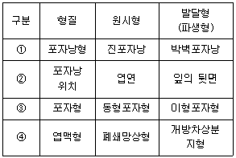
- ①
- ②
- ③
- ④
(정답률: 42%)
3. 식물분류학에서 사용하는 종하위 분류 계급을 큰 단위부터 작은 단위로 옳게 배열한 것은?
- 종(species) - 아종(subspecies) - 변종(variety) - 품종(form)
- 종 - 변종 - 아종 - 품종
- 종 - 아종 - 품종 - 변종
- 종 - 변종 - 품종 - 아종
(정답률: 77%)
4. 다음은 PCR(polymerase chain reaction)에 의한 염기서열분석에 관한 설명이다. 이 3단계를 계속해서 반복하면 DNA 가닥들이 기하급수적으로 증폭된다. 이때 DNA 증식을 위해 필요한 효소는 다른 중합효소와는 달리 온천수에서 서식하는 미생물에서 추출한 효소를 사용하는데, 이 때 사용하는 중합효소는?
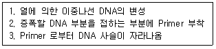
- RNA polymerase
- Helicase
- Taq polymerase
- Restriction enzyme
(정답률: 89%)
5. 다음 중 한반도 고유속에 해당되는 것은?
- 초오속(Aconitum)
- 모데이풀속(Megaleranthis)
- 민들레속(Taraxacum)
- 잔대속(Adenophora)
(정답률: 50%)
6. 자연분류체계에 근간하여 식물분류에 있어 가장 중요한 문헌 중의 하나인 “Prodromus Systematis Naturalis Regni Vegetabilis" 라는 책을 집대성한 사람은?
- Dioscorides
- Adanson
- Bentham
- de Candolle
(정답률: 65%)
7. 다음 중 소엽(microphyll)을 갖고 이형포자를 형성하는 것은?
- 석송(Lycopodium)
- 쇠뜨기(Equisetum)
- 바위손(Selaginella)
- 송엽란(P.nudum)
(정답률: 78%)
8. 기준표본에 관한 다음 설명 중 옳은 것은?
- 정기준표본(holotype) : 명명자가 학명을 지을 때 기준으로 사용하는 표본으로서, 기재문이 출판된 후 지정한 표본을 포함.
- 선정기준표본(lectotype) : 정기준표본이 선정되지 않았거나, 분실 또는 파손되었을 경우 동기준표본에서 선정한 표준
- 동기준표본(isotype) : 처음 학명을 짓거나 기재할 때 사용한 표본 또는 중복품이 없거나 분실되어 새로 보충하여 설정된 표본
- 종기준표본(paratype) : 명명자가 정기준표본을 선정하지 않고 여러 개의 표본을 인용한 경우 그 전부를 포함한 표본
(정답률: 40%)
9. 다음 단자엽식물과 쌍자엽식물의 비교 설명으로 가장 거리가 먼 것은?
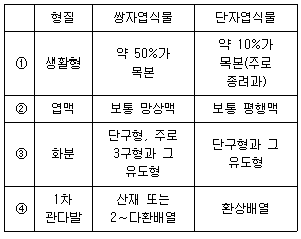
- ①
- ②
- ③
- ④
(정답률: 77%)
10. 다음 유조동물의 일반적인 특징과 가장 거리가 먼 것은?
- 캄브리아기 이래 지금껏 변화가 거의 없는 화석생물에 가까운 동물군이다.
- 환형동물과 절지동물의 특징을 공유한다.
- 암수한몸이고, 유성생식에 의하여 첫 개충이 형성되며 출아에 의하여 군체를 형성한다.
- 입에는 2쌍의 대악이 있고, 그 옆에 1쌍의 구부유두를 가진다.
(정답률: 57%)
11. 분자계통학적 연구에 의한 좌우대칭동물을 분류할 때 옳지 않은 것은?
- 선구동물 - 탈피동물 - 절지동물
- 선구동물 - 탈피동물 - 선형동물
- 후구동물 - 극피동물
- 후구동물 - 탈피동물 - 유조동물
(정답률: 35%)
12. 검색표의 종류 중 상대적인 1쌍의 특징을 머리를 맞추어 순차적으로 내려가는 방법으로 지면을 많이 차지하는 결정이 있는 검색표는?
- 병렬식 검색표
- 계단식 검색표
- 구조식 검색표
- 계통식 검색표
(정답률: 59%)
13. 다음 중 분류계급에 따른 동물명명법으로 옳지 않은 것은?
- 과군 및 속군의 명칭은 첫 글자를 대문자로 시작하며, 종군의 명칭은 소문자로 시작한다.
- 한 과군의 명칭은 모식속 명칭은 어간에 과의 경우 -oidea를 사용한다.
- 한 과군의 명칭은 모식속 명칭은 어간에 아과의 경우 -inae를 사용한다.
- 한 과군의 명칭은 모식속 명칭은 어간에 족의 경우 -ini를 사용한다.
(정답률: 77%)
14. 다음 중 생태적 변이(ecological variation)가 아닌 것은?
- 서식처에 따른 변이
- 숙주에 따른 변이
- 신경원성 색 변이
- 기생충 감염에 의한 변이
(정답률: 50%)
15. 중생동물의 특징으로 거리가 먼 것은?
- 몸의 구조는 단순하고, 무척추동물의 신장과 내장에 기생한다.
- 후생동물의 상실기 또는 중실포배에 해당하는 동물군이다.
- 체표는 표피로 구성되어 있고, 일반적인 세포형과 기관을 가진다.
- 무성출과 유성충이 있고 적충류형유생이 있다.
(정답률: 62%)
16. R. H. Whittaker 의 5계에 포함되지 않는 것은?
- Monera
- Animalia
- Euglenophyta
- Fungi
(정답률: 77%)
17. 다음 중 동물의 분류체계의 연결로 옳지 않은 것은?
- 무체강동물 - 약구동물
- 의체강동물 - 편형동물
- 진체강동물 - 절지동물
- 진체강동물 - 환형동물
(정답률: 73%)
18. 유즐동물의 특징에 해당하지 않는 것은?
- 몸은 이축방사대칭이다.
- 암수한몸이고, 모자이크난에서 발생하여 시디페유생이 된 다음 성체가 된다.
- 위수관강에 입이 있다.
- 외배엽성 생식선은 인두관의 벽속에 있다.
(정답률: 16%)
19. 다음 중 분류군을 동정하거나 분류군 간의 유연관계를 추정하는 분류학적 형질의 종류와 가장 거리가 먼 것은?
- 지리적 형질
- 생리적 형질
- 분자생물학적 형질
- 유용성 형질
(정답률: 82%)
20. 다음 곤충강의 분류체계의 연결로 옳지 않은 것은?
- 곤충강 - 무시아강 - 톡토기목
- 곤충강 - 유시아강 - 고시군 - 하루살이목
- 곤충강 - 유시아강 - 신시군 - 외시류 - 사마귀목
- 곤충강 - 유시아강 - 신시군 - 내시류 - 매미목
(정답률: 57%)
2과목: 환경생태학
21. 종의 풍부도(species richness)를 증가시키는 요인과 거리가 먼 것은?
- 생태적 단순성
- 서식처의 복잡성
- 지역의 규모증가
- 종의 지리적 근원지와의 근접성
(정답률: 86%)
22. 극상군집(climax community)에 관한 설명으로 옳은 것은?
- 순생산이 이용보다 적다.
- 순생산과 이용이 평형 상태에 이른다.
- 순생산이 이용보다 많다.
- 먹이관계가 단순한 연쇄상 구조이다.
(정답률: 79%)
23. 해양환경 중 용승(upwelling)현상에 대한 설명으로 가장 거리가 먼 것은?
- 용승은 영양소를 가진 차가운 심해의 물이 수면으로 올라오는 현상이다.
- 용승은 계절적 현상으로 연안풍이 육지쪽 또는 연안과 수직으로 부는 곳에서 일어난다.
- 뒤섞여 위로 올라온 영양소는 해양 먹이사슬의 기초를 제공하는 광합성 생물에 이용된다.
- 페루의 광대한 멸치어장은 주로 용승현상에 의해 형성된 것이다.
(정답률: 80%)
24. 1950년대에 공장 밀집지역 인근에서 빈번히 발생되었던 환경재난의 대표적인 런던형 스모그는 주로 어떤 대기오염물질에 기인하는가?
- 탄화수소류와 질소산화물
- 질소산화물과 매연
- 매연과 아황산가스
- 아황산가스와 질소산화물
(정답률: 62%)
25. 다음 중 많은 부유물질을 포함한 유속이 느린 강의 하류에서 주로 발생하는 현상은?
- 빛의 투과성이 증가한다.
- 영양물질이 증가한다.
- 산소량이 증가한다.
- 이온전도도가 증가한다.
(정답률: 74%)
26. 다음 중 폐광에서 용출된 Cd 함유폐수가 유입된 지역에서 수확한 농산물을 장기가 섭취한 사람에게서 나타날 수 있는 중독증상으로 가장 옳은 것은?
- 뼈 중의 칼슘대사의 방해로 뼈의 연화를 초래하여 심한 통증이 생기는 동시에 골절상을 보일 때가 많다.
- 호흡촉진, 청색증, 허탈 상태를 주로 보이며, 만성이나 급성폭로시 비암이나 폐암이 유발된다.
- 신경계통에 작용하여 시야협착, 청력장애, 보행장애가 생긴다.
- 체중감소, 빈혈, 복통과 고혈압, 간경화 등이 생긴다.
(정답률: 63%)
27. 토양의 산성화의 원인으로 가장 거리가 먼 것은?
- 농약과 화학비료
- 산성비
- 고동도 유기성 폐수
- 토양개량제
(정답률: 71%)
28. 다음 중 국제적으로 문제가 되는 유해 폐기물의 수출입과 그 처리를 규제하려는 목적으로 제정된 것은?
- 바젤협약
- 몬트리올 의정서
- 런던협약
- 리우협약
(정답률: 67%)
29. 개체군의 변화에 관한 다음 설명 중 가장 거리가 먼 것은?
- 개체군 밀도는 특정 시각에 존재하는 단위 면적당 개체수를 말한다.
- 절대 또는 최대출생률은 이상적 조건하에서 최대수의 개체를 낳는 능력으로 각 개체군에서 일정하지 않다.
- 개체군 밀도는 개체들의 출생, 사망과 이동에 의해 시간에 따라 변화한다
- 개채군은 밀도, 분포, 출생률, 사망률, 연령구조 등 다양한 속성을 가진다.
(정답률: 70%)
30. 지구대기 내에 존재하는 오존에 관한 설명 중 옳지 않은 것은?
- 성층권의 오존층을 파괴하는 염화불화탄소(CFCs)는 불소(F)원소의 성질 때문이다.
- 오존은 존재하는 위치에 따라 우리에게 이롭기도 하고 해가 되기도 한다.
- 성층권의 오존층은 자외선에 의한 광화학 반응에 의하여 산소분자로부터 자연적으로 생성, 소멸된다.
- 오존층의 파괴는 인체에는 피부암 및 시각장애를 일으키고, 식물체에는 생산량을 감소시킨다.
(정답률: 77%)
31. 내성의 법칙에 관한 다음 설명으로 옳지 않은 것은?
- 모든 요인에 대하여 넓은 내성범위를 갖는 생물이 가장 넓게 분포될수 있다.
- 하나의 생태적 요인에 대하여 그 조건이 어떤 종에 최적이 되지 않을 경우, 다른 생태적 요인에 대해서도 내성의 한계가 약화될 수 있다.
- 대부분 생물은 최적범위의 생태적 요인하에서 살고 있지 않다.
- 유생기(幼生期)는 각 요인에 대한 내성이 넓다.
(정답률: 81%)
32. 총면적 10km2인 어느 지역 중 산지 면적이 4km2이다. 이 산지 내에 100본의 소나무와 50본의 참나무가 있을 때, 소나무의 생태밀도(ecological density)는?
- 10본/km2
- 17본/km2
- 25본/km2
- 38본/km2
(정답률: 88%)
33. 다음 중 순 일차 생산성(net primary productivity:NPP)에 관한 가장 적합한 설명한 것은?
- 어떤 지역에서 생산자에 의해 저장된 에너지의 생산율을 의미하며, 측정시간 동안 독립영양생물이 스스로의 생장을 위해 사용한 유기물의 양도 포함한다.
- 스스로의 생장에 사용한 유기물의 양은 고려하지 않고 독립영양생물 내에 축적됨으로써 다른 종속영양생물의 먹이를 섭취 가능한 형태의 유기물의 양을 가리킨다.
- 독립 및 종속영양생물이 사용하고 남은 유기물의 축적량을 가리킨다.
- 생산자가 아닌 소비자의 단계에서 먹이사슬을 통해 다음 단계의 소비자에게 먹이로 사용될 수 있는 형태의 에너지 저장량을 의미한다.
(정답률: 77%)
34. 자연환경에서 생물학적, 생리학적, 행동학적 상호작용의 모든 면을 포함하는 생물들의 역할을 의미하는 것으로 가장 적절한 것은?
- 생태적 지위
- 생물적 피라미드
- 주연부 효과
- 길드
(정답률: 85%)
35. 다음 토양수(水) 중 식물이 주로 이용하는 물은?
- 중력수
- 결합수
- 모관수
- 포장용수
(정답률: 78%)
36. 다음 ( )안에 알맞은 말은?
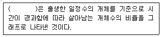
- 출생곡선
- 사망곡선
- 이입곡선
- 생존곡선
(정답률: 100%)
37. 2종의 짚신벌레(Paramecium)를 동시배양할 때와 따로 배양할 때의 결과는 다음과 같다. 이 과정을 설명하는 법칙은?
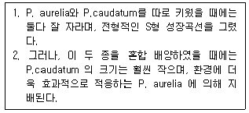
- 최소량의 법칙
- 경쟁 배제의 법칙
- 한계 효용의 법칙
- 내성의 법칙
(정답률: 100%)
38. 대기 및 하천오염원 중 비점오염원에 대한 관리 및 통제가 어려운 현실이다. 다음 중 비점오염원으로만 연결된 것은?
- 경작지, 산림벌채지, 도로
- 목장, 폐수처리장, 발전소
- 도시지역, 주차장, 석유탱크
- 공사장, 공장, 하수처리장
(정답률: 87%)
39. 생활하수나 공장폐수가 수역에 유입되었을 때 발생하는 현상 중 옳지 않은 것은?
- 부영양화 현상
- 분해성 유기물의 증가
- DO 및 COD 의 증가
- 일반적으로 중금속 농도의 증가
(정답률: 75%)
40. 지구의 질소순환(Nitrogen Cycle)에 관한 설명으로 옳지 않은 것은?
- 건조 대기의 약 79%는 질소이다.
- 질소고정 박테리아를 제외한 지구상의 대부분 생물들은 대기중의 질소를 직접 이용할 수 없다.
- 무기질소의 형태는 질산염, 아질산염, 그리고 암모니아 이다.
- 암모니아 이온은 자가영양을 하는 Nitrobactor에 의해 아질산염의 형태로 전환된다.
(정답률: 89%)
3과목: 형태학
41. 다음 ( )안에 알맞은 것은?
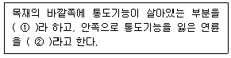
- ① 연재, ② 경재
- ① 연재, ② 심재
- ① 변재, ② 연재
- ① 변재, ② 심재
(정답률: 72%)
42. 유조직과 후각조직의 가장 큰 차이점은?
- 세포의 대사활동 가능여부
- 2차벽의 존재여부
- 세포벽의 비후양상
- 세포의 크기
(정답률: 73%)
43. 다음 중 이판화관에 대한 가장 적합한 설명은?
- 꽃잎이 두 개인 꽃
- 꽃잎이 서로 떨어져 있는 꽃
- 꽃잎이 서로 다른 꽃
- 꽃잎이 합쳐져 있는 꽃
(정답률: 69%)
44. 다음 중 식물의 기본분열조직(ground meristem)이 분화되어 만들어지는 것은?
- 공변세포(guard cell)
- 유조직(parenchyma)
- 물관부(xylem)
- 뿌리털(root hairs)
(정답률: 73%)
45. 사람의 몸에 기생하는 간흡충(간디스토마)(Chlonorchis sinensis)의 생활사에서 물고기 속에서 포낭을 형성하는 단계는?
- 미라시디움(miracidium)
- 레디아(redia)
- 세프카리아(cercaria)
- 메타세르카리아(metacercaria)
(정답률: 34%)
46. 다음 중 표피세포가 특수화된 것만으로 연결된 것은?
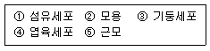
- ①, ②, ③
- ①, ③, ⑤
- ②, ③, ⑤
- ①, ②, ④
(정답률: 67%)
47. 연체동물의 형태적 특징에 관한 설명으로 옳지 않은 것은?
- 체표의 표피에는 보통 섬모가 나 있고, 점액선이 다수 분포하며, 감각신경의 말단이 위치한다.
- 체강은 퇴화하여 심장의 주위에 국한된다.
- 나선형 난할을 하며 유생은 담륜자유생이다.
- 두족류의 대부분은 개방혈관계를 가진다.
(정답률: 29%)
48. 다음 설명 중 옳은 것은?
- 두족강은 연체동물 중 개체가 잘 발달한 무리로 낙지, 문어 등이 포함된다.
- 갯지렁이는 환형동물에 속하며, 개방혈관계를 가지고 있다.
- 빈모강(Oilgochaeta)에 속하는 거머리류는 몸에 흡반이 있고, 환형동물에 속한다.
- 연체동물과 환형동물은 유사한 발생적 특징(유생의 유형 : 노플리우스)를 가지고 있으나, 계통적으로는 전혀 관계가 없는 문(phylum)들이다.
(정답률: 67%)
49. 상엽충에 관한 설명으로 가장 적합한 것은?
- 무두 화석생물로 고생대 말기에 절멸되었다.
- 두부는 2개의 유합된 체절을 갖고 있다.
- 모두 소형 플랑크톤성인 것으로 알려져 있다.
- 촉각은 없으나, 부속지는 있다.
(정답률: 57%)
50. 주로 단자엽식물의 줄기에서 유관속ㄴ이 줄기 전체에 퍼져있는 중심주는?
- 망상중심주
- 방사중심주
- 부제중심주
- 진정중심주
(정답률: 67%)
51. 조류의 소화기계로 단단하고 두꺼운 근육질로 전체적으로는 암홍색을 띠며, 먹이와 함께 섭취된 모래알이나 작은 돌에 의해 먹이를 분쇄하여 소화를 돕는 포유류의 위(Stomach)와 같은 기능을 가진 기관은?
- 소낭(Crop)
- 위강(Gastral Cavity)
- 사낭(Gizzard)
- 췌장(Pancreas)
(정답률: 82%)
52. 물관부 조직에 관한 다음 설명 중 옳지 않은 것은?
- 물관부는 헛물관부와 물관세포로 알려진 수송요소를 갖는 조직이다.
- 헛물관부는 측벽과 끝벽에 벽공을 가지고 있다.
- 벽공은 단지 두 개의 이웃하는 세포의 얇은 1차 세포벽으로 구성된다.
- 물관세포는 헛물관세포보다 더 길고 가늘며, 끝쪽으로 갈수록 가늘어진다.
(정답률: 40%)
53. 곡류를 섭취하는 조류의 소화계를 입에서부터 순서대로 올바르게 나열한 것은?
- 식도, 소낭, 전위, 사낭
- 식도, 전위, 사낭, 소낭
- 식도, 전위, 소낭, 사낭
- 식도, 사낭, 전위, 소낭
(정답률: 63%)
54. 개구리의 3방 심장 구조를 바르게 나타낸 것은?
- 좌심방, 우심방, 심실
- 좌심방, 우심실, 심방
- 좌심방, 좌심실, 우심실
- 우심실, 좌심실, 우심방
(정답률: 91%)
55. 다음의 곤충 신경계 중 눈, 촉각, 그리고 다른 감각구조로부터 들어오는 정보를 통합하는 일을 하는 것은?
- 제절에 있는 신경절
- 복신경삭
- 식도하 신경절
- 식도상 신경절
(정답률: 40%)
56. 공변세포와 부세포의 배열은 식물을 분류하는데 중요한 형질로 사용된다. 아래 그림과 같은 형태이며 주로 십자화과, 가지과 등에서 주로 볼 수 있는 기공복합체(stomatal complex)는?
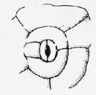
- 불규칙형(anomocytic)
- 평행형(paracytic)
- 방사형(actinocytic)
- 불균등형(anisocytic)
(정답률: 44%)
57. 대부분의 종자식물(seed plant)의 뿌리는 토양내의 곰팡이류와 공생관계를 가지고 있는데 이러한 뿌리를 일컫는 용어는?
- 뿌리혹(root nodule)
- 균근(mycorrhiza)
- 호흡근(pneumatophore)
- 기근(aerial root)
(정답률: 62%)
58. 춘재부분의 도관의 폭이 현저하게 넓고, 추재 부분으로 갈수록 도관의 폭이 좁아 그 차이가 현저한 목재를 무엇이라 하는가?
- 산공재(diffuse-porous wood)
- 환공재(ring-porous wood)
- 연륜(annual ring)
- 만재(late wood)
(정답률: 38%)
59. 다음 중 (동)반세포(companion cell)의 기능을 가장 적절하게 설명한 것은?
- 식물체를 지탱하기 위한 구조적인 지지작용
- 동화작용의 산물인 전분(starch)의 저장작용
- 유관속내의 물과 무기염류의 수송
- 탄수화물을 사관절로 수송하는 일을 조절
(정답률: 53%)
60. 다음 동물 중 뇌의 구조상 후각엽(olfactory)이 가장 발달한 동물은?
- 고양이
- 개구리
- 상어
- 닭
(정답률: 87%)
4과목: 보존 및 자원생물학
61. 다음 보전생물학의 기본적인 가정(hypothesis)으로 가장 거리가 먼 것은?
- 생물다양성은 이로운 것이다.
- 개체군과 생물 종의 때아닌 절멸은 지극히 자연스런 일이다.
- 생태적으로 복잡한 것이 좋다.
- 진화는 이로운 현상이다.
(정답률: 95%)
62. 생물다양성(Biological diversity)이 포함하는 개념과 가장 거리가 먼 것은?
- 종 수준에서의 다양성
- 종내 지리적으로 격리된 개체군 간 그리고 개체군 내의 개체간 유전적 변이의 다양성
- 생물 군집 및 생태계간의 상호작용에 관한 다양성
- 식물 개체 내에서 표현형의 다양성
(정답률: 74%)
63. 사람의 학명을 옳게 쓴 것은?
- Homo Sapiens
- Homo sapiens Linne
- Homo sapiens
- homo sapiens Linne
(정답률: 74%)
64. 우리나라 하천 생태계에서 생물다양성 감소의 직접적인 원인과 가장 거리가 먼 것은?
- 골재 채취
- 인구의 증가
- 유역의 교란
- 유해 독극물이나 기름 유출
(정답률: 71%)
65. 국제자연보전연맹-세계보전연맹이 구분한 보존대상 종 중 제한된 지리적 분포나 낮은 개체군 밀도로 인하여 개체수가 적은 종을 의미하는 것은?
- 희귀종
- 취약종
- 위험종
- 절멸종
(정답률: 75%)
66. 다음 중 멸종되기 쉬운 종이 아닌 것은?
- 지리적 분포범위가 넓은 종
- 개체군의 크기가 작은 종
- 개체군의 밀도가 낮은 종
- 계절적 이주종
(정답률: 56%)
67. 군집 및 생태계 다양성에 관한 다음 설명 중 옳지 않은 것은?
- 생태적 지위는 그 종이 점유하는 환경의 천이단계를 포함할 수도 있다.
- 생물군집(biological community)이란 특정 환경에 서식하며 서로 상호작용을 하는 종들의 집합이다.
- 천이(succession)란 자연적으로 또는 인간이 생물군집을 교란하여 생겨나는 종의 조성, 군집구조, 물리적 특징 등의 점진적인 변화를 말한다.
- 포식동물에 의해서 개체수가 조절되는 생물군의 개체수는 거의 대부분 수용능력(carrying capacity)보다 높은 상태로 유지된다.
(정답률: 89%)
68. 대규모 서식지가 도로, 도시 또는 다른 인위적 활동장소 개발에 의해 분할되는 “서식지 단편화”로 인하여 나타나는 현상과 거리가 먼 것은?
- 서식지 단편화는 종이 확산되고 정착하는 능력을 제한한다.
- 서식지 단편화는 그 지역 토착동물이 먹이를 얻는 능력을 약화시킬 수 있다.
- 서식지가 단편화되면 넓은 지역에 분포하는 개체군이 제한된 지역에 2개 이상의 “아 개체군”으로 분할되어 개체군 쇠퇴나 절멸이 촉진된다.
- 서식지가 단편화되면 분할된 지역에 외래종이나 토착병원균 종류들이 침입할 가능성은 낮아진다.
(정답률: 84%)
69. 환경오염에 의한 서식지의 황폐화 현상에 대한 다음 설명 중 적절하지 않은 것은?
- 살포된 살충제가 먹이사슬을 거쳐 생물 농축되고 궁극적으로 인간에게 영향을 미친다.
- 비료, 세제 등의 과도한 사용은 부영양화를 야기시키며 조류번식이 촉진되어 물속의 산소농도는 계속 높은 농도가 유지되므로 단순한 구조의 군락이 형성된다.
- 산업화된 지역의 호수나 연못에서는 산성비의 결과 동물군집의 상당부분이 손실된다.
- 지구기후변화와 대기 중의 이산화탄소 농도증가는 새로운 여건에 적응할 수 있는 종이 살아남게 되어 결국 생물군집의 구조가 급격히 변화할 가능성이 있다.
(정답률: 84%)
70. 식물 표본의 충해를 방지하기 위한 약품으로 가장 거리가 먼 것은?
- chloramine
- cyanide gas
- carbon disulfide gas
- paradichlorobenzene
(정답률: 70%)
71. 외래종의 도입으로 인하여 나타나는 현상과 가장 거리가 먼 것은?
- 도입종의 거의 대부분은 새로운 환경에 적응하기 어려워 정착하지 못한다.
- 상업이나 낚시 등을 목적으로 도입된 외래어종은 가끔 도입종이 토착종보다 크고 공격적이어서 경쟁과 포식을 통해 원래의 어류를 멸종시키기도 한다.
- 몇 종의 포식자와 함께 군락에 적응해 온 도서의 동물종은 도입된 포식자에 대한 방어능력이 절대적으로 크고, 또한 도서에 있는 종은 대륙의 질병에 대한 자연적인 면역체계를 갖는다.
- 일부 도입종이 새로운 서식지를 우정할 수 있는 이유중 하나는 새로운 서식지에는 자연적인 포식자, 질병, 기생출이 없기 때문이다
(정답률: 85%)
72. 서로 떨어진 지역간의 종 다양성을 비교하기 위해 고안된 수학적 지수에 관한 설명으로 옳은 것은?
- 알파 다양성(alpha diversity)은 종조성이 다양한 환경기울기에 따라 얼마나 변하는지 그 정도를 나타내는 것이다.
- 이끼군집이 고도에 따라 계속 변한다면 베타 다양성(beta diversity)이 높다고 말할 수 있지만, 산비탈을 따라 계속 동일한 종조성이 유지된다면 베타 다양성이 낮다고 할 수 있다.
- 감마 다양성(gamma diversity)이란 어떤 종들이 지리적으로 같은 지역에서 다른 종류의 서식처를 만날 확률은 말한다.
- 다양성 지수간의 상관성은 매우 낮게 나타난다.
(정답률: 65%)
73. 다음 생물다양성(Biological diversity) 척도 중 특정 환경에 대한 종들의 진화적, 생태적 적응 범위를 결정하는 지표에 해당하는 것은?
- 유전적 다양성
- 종 다양성
- 군집 다양성
- 생태계 다양성
(정답률: 29%)
74. 다음 ( )안에 들어갈 가장 알맞은 말은?
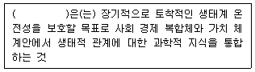
- 보호지구관리
- 보호지구설계
- 국제협약
- 생태계 경영
(정답률: 50%)
75. 세계적으로 멸종위기에 처한 야생동식물의 상업적인 국제거래를 규제하고 생태계를 보호하기 위하여 1973년 3월에 워싱턴에서 채택된 협약은?
- WWF
- UNEP
- WCMC
- CITES
(정답률: 94%)
76. 지구의 기후 변화로 인한 생물다양성 감소의 직접적인 원인과 가장 거리가 먼 것은?
- 대기중 이산화탄소 농도의 증가
- 지구 온난화
- 해수면의 상승
- 토양오염
(정답률: 67%)
77. 희귀종 소개체군에서 동일종의 교배 상대를 찾기 어렵기 때문에 결국 다른 유사종과의 사이에서 태어난 자식들이 염색체와 효소 체계의 불화합성 때문에 약하거나 붙임이 될 수 있는 현상을 무엇이라 하는가?
- 타식약세
- 근친교배
- 대립생태
- 이형부생
(정답률: 54%)
78. 다음은 생태계 복원방법 중 어디에 해당하는가?
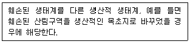
- 방치
- 복원
- 회복
- 대체
(정답률: 89%)
79. 최소 생존 개체군(MVP)을 유지시키기 위해 필요한 서식지의 크기(면적)을 무엇이라 하는가?
- 적정 유효 면적
- 최소 역동 면적
- 최소 생존 면적
- 적정 보호 면적
(정답률: 75%)
80. 유기염소 살충제가 먹이사슬을 거치며 축적되는 「생물농축」의 과정을 기술한 레이첼 카슨의 책은?
- 침묵의 봄
- 가이아
- 훌륭한 신세계
- 린네의 생태일기
(정답률: 90%)
5과목: 자연환경관계법규
81. 환경정책기본법상 규정된 용어의 정의로 옳지 않은 것은?
- “환경”이라 함은 자연환경과 생활환경을 말한다.
- “생활환경”이라 함은 대기, 물, 폐기물, 소음·진동, 악취, 일조 등 사람의 일상생활과 관계되는 환경을 말한다.
- “환경용량”이라 함은 일정한 지역안에서 환경의 질을 유지하고 환경오염 또는 환경훼손에 대하여 환경이 스스로 수용·정화 및 복원할 수 있는 한계를 말한다.
- “환경오염”이라 함은 야생동·식물의 남획 및 그 서식지의 파괴, 생태계질서의 교란, 자연경관의 훼손, 표토의 유실 등으로 인하여 자연환경의 본래적 기능에 중대한 손상을 주는 상태를 말한다.
(정답률: 44%)
82. 야생동·식물보호법규상 멸종위기야생동·식물 1급으로 지정된 것은?
- 개병풍
- 미호종개
- 맹꽁이
- 먹황새
(정답률: 39%)
83. 환경정책기본법령상 오존(O3)의 대기환경기준으로 옳은 것은?
- 8시간 평균치 : 0.15 ppm 이하
- 1시간 평균치 : 0.1 ppm 이하
- 8시간 평균치 : 0.12 ppm 이하
- 1시간 평균치 : 0.06 ppm 이하
(정답률: 36%)
84. 국토의 계획 및 이용에 관한 법률상 토지의 이용실태 및 특성, 장래의 토지이용방향 등을 고려하여 국토를 구분할 때, 그 용도지역을 가장 적합하게 구분한 것은?
- 도시지역, 관리지역, 농림지역, 자연환경보전지역
- 도시지역, 준농림지역, 농림지역, 자연환경보전지역
- 도시지역, 농림지역, 자연환경보전지역, 녹지지역
- 보존지역, 관리지역, 준농림지역, 준도시지역
(정답률: 62%)
85. 국토의 계획 및 이용에 관한 법률상 도시지역내 각 지역별 용적률의 최대한도로 옳은 것은?
- 주거지역 : 200퍼센트 이하
- 상업지역 : 1천퍼센트 이하
- 공업지역 : 250퍼센트 이하
- 녹지지역 : 100퍼센트 이하
(정답률: 45%)
86. 야생동·식물보호법규상 생태계교란야생 동·식물에 해당되지 않는 것은?
- 단풍잎돼지풀
- 감돌고기
- 도깨비가지
- 붉은귀거북속 전종
(정답률: 69%)
87. 독도등도서지역의생태계보전에관한특별법상 환경부장관이 특정도서의 생태계 보전을 위하여 토지 등을 매수하는 경우 토지매수가격은 어는 법에 의해 산정하는가?
- 공유토지분할에관한특례법
- 공익사업을위한토지등의취득및보상에관한법률
- 국토의 계획 및 이용에 관한 법률
- 지가공시및토지등의평가에관한법률
(정답률: 75%)
88. 야생동·식물보호법규에 규정된 멸종위기야생동·식물 Ⅰ급에 해당하지 않는 것은?
- 노랑부리저어새
- 검은머리갈매기
- 참수리
- 흰꼬리수리
(정답률: 71%)
89. 자연환경보전법령상 중앙행정기관의 장이 환경부장관 또는 해양수산부장관)단, 해양자연환경에 관한 사항에 한함)과 협의하여야 할 자연환경보전과 직접 관계가 있는 주요시책 또는 계획으로 가장 거리가 먼 것은?
- 「산림문화·휴양에 관한 법률」규정에 따른 자연 휴양림의 지정
- 「해양개발기본법」규정에 따른 해양수산자원개발계획
- 「광업법」규정에 따른 광업개발계획
- 「문화재보호법」규정에 따른 천연기념물의 지정
(정답률: 24%)
90. 개발제한구역의 지정 및 관리에 관한 특별조치법령상 개발제한구역을 조정 또는 해체할 수 있는 지역이 아닌 것은?
- 도시의 균형적 성장을 위하여 기반시설의 설치 및 시가화 면적 조정 등 토지이용의 합리화를 위하여 필요한 지역
- 개발제한구역에 대한 환경평가 결과 보존가치가 낮게 나타나는 곳으로서 도시용지의 적절한 공급을 위하여 필요한 지역
- 주민이 집단적으로 거주하는 취락으로서 주거환경 개선 및 취락정비가 필요한 지역
- 도로(건설교통부장관이 지정하는 규모의 도로에 한함)·철도 또는 하천개수로 등의 공공시설의 설치로 인하여 생기는 4천제곱미터의 소규모 단절토지
(정답률: 23%)
91. 농지법규상 실습지 등으로 농지를 소유할 수 있는 공공단체로 거리가 먼 것은?
- 한국농촌공사
- 농수산물유통공사
- 한국식품개발연구원
- 한국농지개발공사
(정답률: 7%)
92. 야생동·식물보호법규상 외국인 등이 일시 체류를 목적으로 입국하는 자가 출국시 반출하기 위하여 애완용 야생동물을 반입하는 경우 앵무새·비둘기·고양이 등 애완용으로의 사육이 일반화된 동물의 반입허용 기준은?
- 1인당 1마리를 초과하지 아니할 것
- 1인당 2마리를 초과하지 아니할 것
- 1인당 3마리를 초과하지 아니할 것
- 1인당 5마리를 초과하지 아니할 것
(정답률: 47%)
93. 습지보전법상 습지보전을 위해 설치할 수 있는 시설 중 가장 거리가 먼 것은?
- 습지연구시설
- 습지준설복원시설
- 습지오염방지시설
- 습지생태관찰시설
(정답률: 79%)
94. 백두대간보호에 관한 법률에 관한 설명으로 틀린 것은?
- 이 법은 백두대간의 보호에 필요한 사항을 규정하여 무분별한 개발행위로 인한 훼손을 방지함으로써 국토를 건전하게 보전하고 쾌적한 자연환경을 조성함을 목적으로 한다.
- “백두대간”이라 함은 백두산에서 시작하여 금강산·설악산·태백산·소백산을 거쳐 지리산으로 이어지는 큰 산줄기를 말한다.
- “백두대간보호지역”이라 함은 백두대단 중 특별히 보호할 필요가 있다고 인정되어 관련 규정에 의하여 대통령이 지정·고시하는 지역을 말한다.
- 산림청장은 백두대간을 효율적으로 보호하기 위한 백두대간보호기본계획을 환경부장관과 협의하여 매 10년마다 수립하여야 한다.
(정답률: 42%)
95. 다음은 자연환경보전법상 자연환경조사에 관한 설명이다. ( )안에 알맞은 것은?
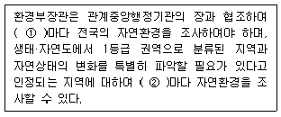
- ① 20년, ② 10년
- ① 15년, ② 10년
- ① 10년, ② 5년
- ① 5년, ② 3년
(정답률: 59%)
96. 습지보전법규상 다음 ( )안에 알맞은 것은?
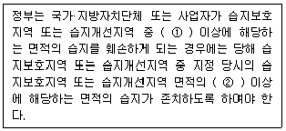
- ① 4분의 1, ② 2분의 1
- ① 2분의 1, ② 2분의 1
- ① 4분의 1, ② 3분의 1
- ① 2분의 1, ② 3분의 1
(정답률: 75%)
97. 자연공원법상 어떤 용도지구에 관한 설명인가?
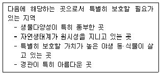
- 공원자연보존지구
- 공원자연마을지구
- 공원밀집마을지구
- 공원집단시설지구
(정답률: 79%)
98. 산지관리법규상 산사태위험판정기준표의 위험요인에 해당되는 점수합계가 “120점 이상 180점 미만인 경우”는?
- 산사태발생가능성이 대단히 높은 지역
- 산사태발생가능성이 높은 지역
- 산사태가 발생할 가능성이 낮은 지역
- 산사태가 발생할 가능성이 없는 지역
(정답률: 74%)
99. 국토의 계획 및 이용에 관한 법률상 각 용도지구에 관한 설명으로 옳지 않은 것은?
- 한도지구 : 쾌적한 환경조성 및 토지의 고도이용과 그 증진을 위하여 건축물의 높이의 최저한도 또는 최고한도를 규제할 필요가 있는 지구
- 보존지구 : 문화재, 중요 시설물 및 문화적·생태적으로 보존가치가 큰 지역의 보호와 보존을 위하여 필요한 지구
- 방재지구 : 풍수해, 산사태, 지반의 붕괴 그 밖의 재해를 예방하기 위하여 필요한 지구
- 개발진흥지구 : 주거기능·상업기능·공업기능·유통물류기능·관광기능·휴양기능 등을 집중적으로 개발·정비할 필요가 있는 지구
(정답률: 46%)
100. 자연공원법상 용도지구에서 허용되는 행위에 관한 설명으로 가장 거리가 먼 것은?
- 공원자연보존지구에서는 문화재보호법 규정에 의한 국가지정문화재, 시·도지정문화재 또는 문화재자료로 지정된 사찰의 복원은 할 수 있다.
- 공원자연환경지구에서는 부대시설을 포함하여 연면적 1천300제곱미터 이하이며 2층 이하인 육상어업시설은 설치할 수 있다.
- 공원자연마을지구에서는 환경오염을 일으키지 아니하는 가내공업(家內工業)은 할 수있다.
- 공원밀집마을지구에서는 관광진흥법 규정에 의한 관광숙박시설은 설치할 수 있다.
(정답률: 25%)
"수술은 4개로 사강웅예이고, 꽃받침과 꽃잎이 4장씩 십자형으로 배열한다."는 십자화과 식물의 일반적인 꽃의 구조와 배열 방식을 나타내는 것이다. 꽃받침과 꽃잎이 4장씩 있으며, 십자형으로 배열된다는 것은 꽃잎과 꽃받침이 서로 대칭적으로 배치된다는 것을 의미한다. 이는 십자화과 식물의 대표적인 특징 중 하나이다.
"암술은 2심피가 합생한다."는 십자화과 식물의 꽃의 생식기관인 암술의 구조를 나타내는 것이다. 암술은 일반적으로 2개의 심피로 이루어져 있으며, 이 심피가 합생하여 하나의 암술을 이룬다.
"열매는 단각과 또는 장각과로서, 열매가 갈라진 후에도 얇은 벽은 남는다."는 십자화과 식물의 열매의 구조를 나타내는 것이다. 대부분의 십자화과 식물은 단각과 또는 장각과의 형태를 가진 열매를 가지며, 이 열매가 갈라진 후에도 얇은 벽이 남는다는 것을 의미한다.
따라서, "배는 크고 유질이며, 배유는 거의 없다."가 옳지 않은 것이다.